The authors of a psychophysiological experiment at the local University asked me to make artistic renderings of a sample of their data, four recordings of the electrical activity of a single neuron.
Houdini proved to be the best tool to manage this task. The first image corresponds to the raw data normalized and rendered in grayscale.
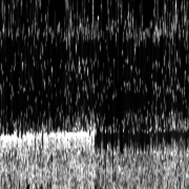
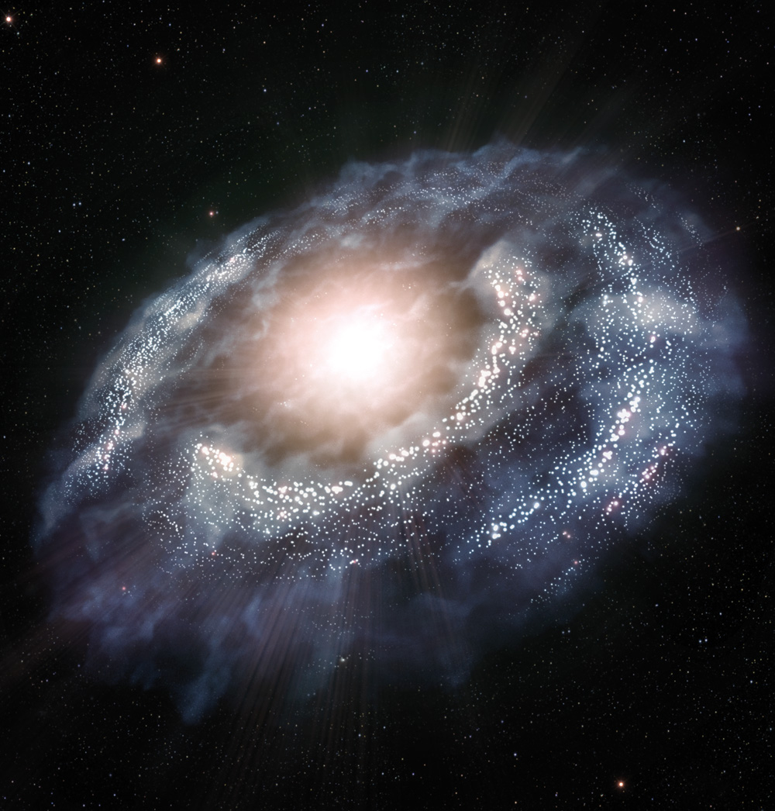
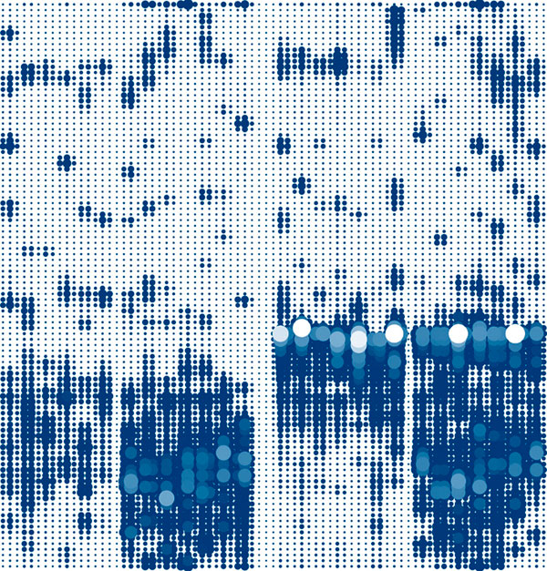
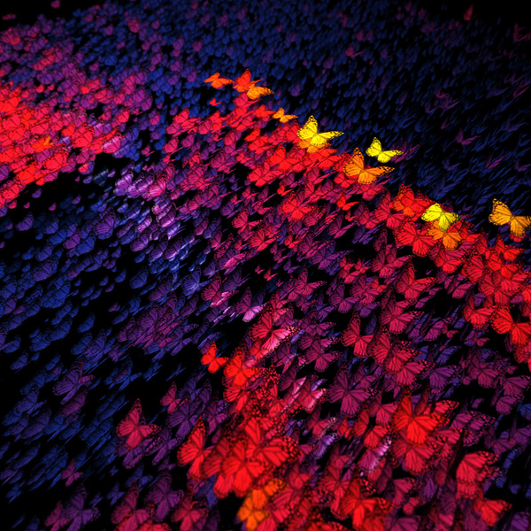
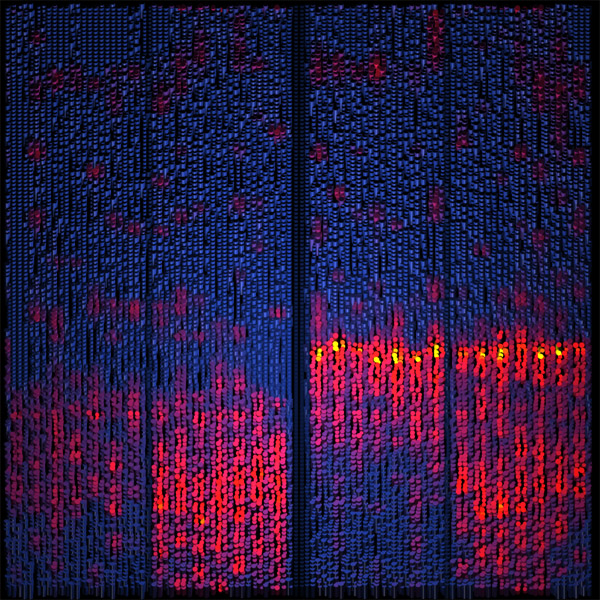
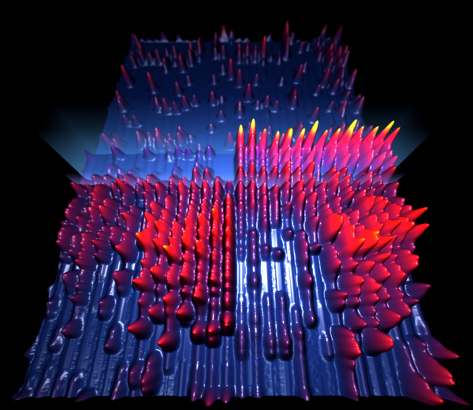
Little tests programming for the Nintendo DS (roms: nds-test.nds, nds-fire.nds).
Direct implementation in C++ of Jos Stam's "Real-Time Fluid Dynamics for Games" famous paper. Using the fantastic TinyPTC library to draw pixels on Windows.
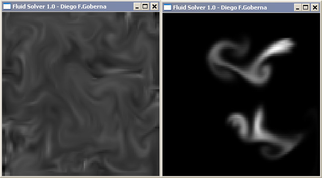
Same as above, but this time in Javascript and trying to get a nice thing to present in the great js1k.com contest. I didn't present this one, since I didn't manage to shrink it to 1024 Bytes without destroying it too much, but had a lot of fun implementing the algorithm.
(I didn't find the code yet, just these two screenshots..)
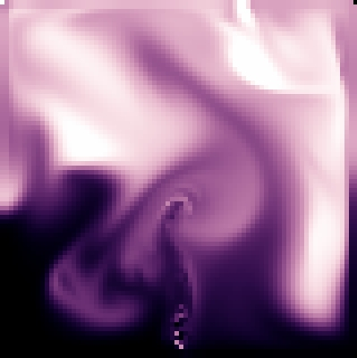
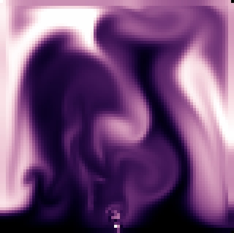
Implementation in Flash of a boids system with different behaviours.
Basic raytracer done in C++.
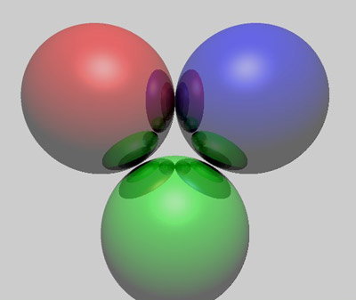
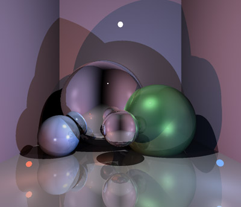
Willing to know how far I was from a professional raytracer, I made a MEL script in Maya to export to my scene format and be able to compare both renderers:
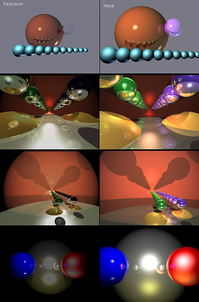
Years later I did another raytracer in Python:
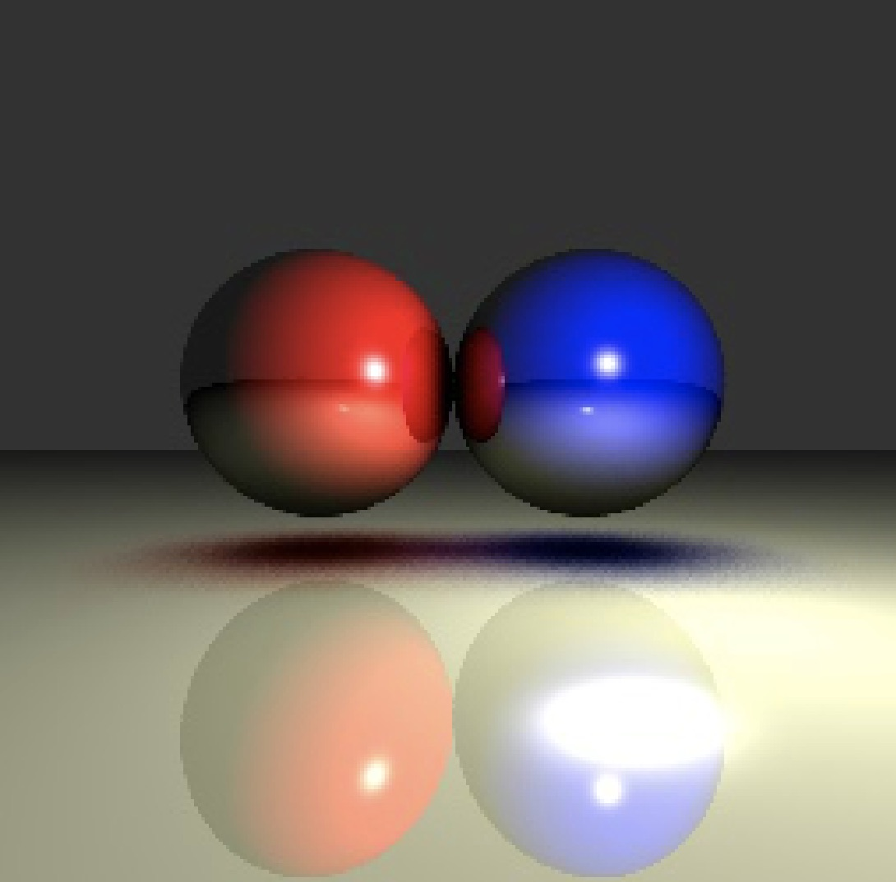
Synthesis of cellular textures, based in Voronoi diagrams. Coloring in Photoshop.
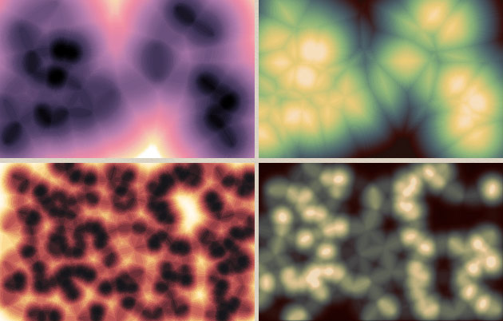
My humble incursion into raymarching Signed Distance Functions. Link.
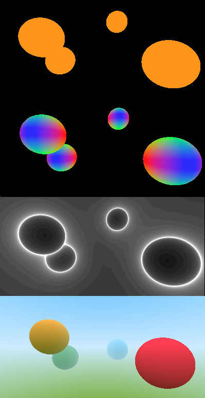
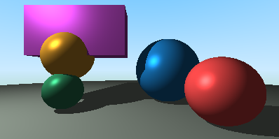